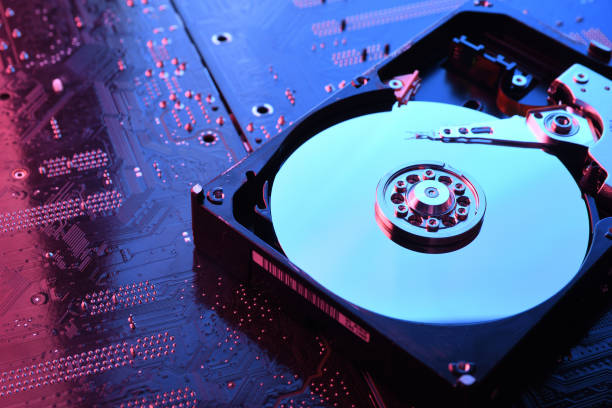

Data Storage Devices: HDD, SSD, and Optical Discs
Data storage is an essential aspect of computing systems, as it is responsible for storing,
managing, and retrieving data. There are various types of storage devices, each with its specific
characteristics, applications, and advantages. In this article, we will explore three primary
types of data storage devices: Hard Disk Drives (HDD), Solid-State Drives (SSD), and
Optical Discs (CDs/DVDs). Each of these storage devices plays a vital role in modern computing,
and understanding their differences can help in making informed decisions regarding storage needs.
1. Hard Disk Drive (HDD)
The Hard Disk Drive (HDD) is one of the oldest and most commonly used storage devices. It stores data magnetically on spinning disks (platters). Despite being a mature technology, HDDs are still widely used due to their relatively low cost per gigabyte and large storage capacities. However, HDDs are mechanical devices, which means they are slower and more susceptible to physical damage compared to newer technologies like SSDs.

Hard Disk Drive (HDD) is a traditional storage device that uses spinning disks to store data.
Characteristics of HDD:
- Mechanical Components: HDDs consist of spinning disks (platters) and read/write heads, which move across the platters to access data. This mechanical nature makes them slower than SSDs.
- Cost-Effective: HDDs offer the lowest cost per gigabyte compared to other storage devices, making them ideal for budget-conscious users who need large storage capacities.
- Large Storage Capacity: HDDs typically range from 500GB to 16TB in consumer-level devices, and even higher in enterprise environments.
- Slower Speeds: HDDs are slower compared to SSDs because of their mechanical operation. Typical read/write speeds are between 80-160MB/s.
- Durability: Due to their mechanical parts, HDDs are more prone to physical damage from shocks, drops, or excessive vibrations.
Advantages of HDD:
- Cost-Efficient: Provides a great cost-to-storage ratio, making it ideal for storing large volumes of data.
- High Storage Capacity: HDDs are available in very large storage capacities, often ranging from 500GB to 16TB and beyond.
- Widespread Compatibility: HDDs are compatible with a wide range of devices, from desktops to laptops and external drives.
Disadvantages of HDD:
- Slower Performance: Because of the mechanical nature of HDDs, data retrieval and access times are slower than that of SSDs.
- Noise and Heat: The spinning disks and moving parts can generate noise and heat, which may reduce the lifespan of the device over time.
- Vulnerable to Physical Damage: Since HDDs have moving parts, they are more prone to failure from drops, impacts, or shocks.
2. Solid-State Drive (SSD)
A Solid-State Drive (SSD) is a newer type of data storage device that uses flash memory to store data. Unlike HDDs, SSDs have no moving parts, which makes them faster, quieter, and more durable. SSDs have become the standard for many modern computing devices, including laptops, desktops, and high-performance systems due to their speed and efficiency.
Solid State Drive (SSD) is a storage device that uses flash memory, offering faster speeds and greater reliability compared to HDDs.
Characteristics of SSD:
- Flash Memory: SSDs use NAND flash memory, which is a type of non-volatile memory that stores data electronically rather than magnetically.
- No Moving Parts: SSDs have no mechanical components, which makes them faster and more reliable than HDDs. They are less prone to mechanical failure.
- Fast Performance: SSDs provide much faster read and write speeds compared to HDDs, with typical speeds ranging from 500MB/s to over 3GB/s depending on the type of SSD (SATA, NVMe, etc.).
- Higher Durability: Since SSDs have no moving parts, they are more resilient to drops, shocks, and other physical impacts.
- Energy-Efficient: SSDs consume less power compared to HDDs, leading to better battery life in laptops and less heat generation.
Advantages of SSD:
- Speed: SSDs are significantly faster than HDDs, offering quicker boot times, file transfers, and application loading.
- Reliability: With no moving parts, SSDs are less susceptible to mechanical failure and more resistant to physical damage.
- Energy Efficiency: SSDs consume less power, leading to better battery performance in laptops and lower power consumption overall.
- Quieter Operation: SSDs operate silently since they have no moving parts, unlike HDDs, which generate noise due to their spinning disks.
Disadvantages of SSD:
- Higher Cost: SSDs are more expensive than HDDs in terms of cost per gigabyte, although prices have been steadily decreasing over time.
- Limited Write Cycles: SSDs have a limited number of write cycles, which means they can wear out over time with heavy use, although modern SSDs are designed to last for years in typical use cases.
- Lower Storage Capacity (Relative to HDDs): Although SSDs are available in large capacities, they are generally more expensive for large storage options compared to HDDs.
3. Optical Discs (CDs/DVDs)
Optical discs, such as Compact Discs (CDs) and Digital Versatile Discs (DVDs), are another type of data storage device that uses laser technology to read and write data. These discs are primarily used for media storage, software distribution, and backup purposes. While they are less commonly used for primary storage in modern systems, they are still popular for distributing content like music, movies, and software.
Optical Disc (CD/DVD) is a storage medium that uses laser light to read and write data on a reflective surface.
Characteristics of Optical Discs:
- Laser Technology: Optical discs use laser beams to read and write data. The data is stored in the form of tiny pits and lands on the surface of the disc.
- Portable: Optical discs are portable and can be easily shared or transported between devices, making them useful for content distribution.
- Writable and Rewritable Options: Some optical discs, such as CD-RWs and DVD-RWs, can be written to and erased multiple times, making them versatile for data storage and backups.
- Low Storage Capacity: Compared to HDDs and SSDs, optical discs have a much lower storage capacity, typically ranging from 700MB for CDs to 4.7GB for single-layer DVDs.
Advantages of Optical Discs:
- Inexpensive: Optical discs are relatively cheap compared to other storage devices like SSDs and HDDs, making them a low-cost option for distributing content.
- Portability: They are compact, lightweight, and easy to carry, which makes them useful for transporting data between devices.
- Read-Only and Writable Options: Optical discs come in both read-only (CDs/DVDs) and rewritable (CD-RWs, DVD-RWs) versions for data storage.
Disadvantages of Optical Discs:
- Low Storage Capacity: Optical discs have limited storage capacity compared to modern storage devices, making them unsuitable for large data backups or operating system installations.
- Slower Read/Write Speeds: Optical discs are much slower in terms of data access speeds compared to HDDs and SSDs.
- Fragile: Optical discs can be easily scratched, which may render them unreadable or cause data loss.
Conclusion
Data storage devices play an essential role in modern computing,
offering different features, capacities, and performance characteristics.
Hard Disk Drives (HDDs), Solid-State Drives (SSDs), and Optical Discs (CDs/DVDs)
each have their advantages and disadvantages, depending on the use case. While HDDs offer
large capacities at a low cost, SSDs provide faster performance and greater reliability,
and optical discs remain useful for distributing content and performing backups.